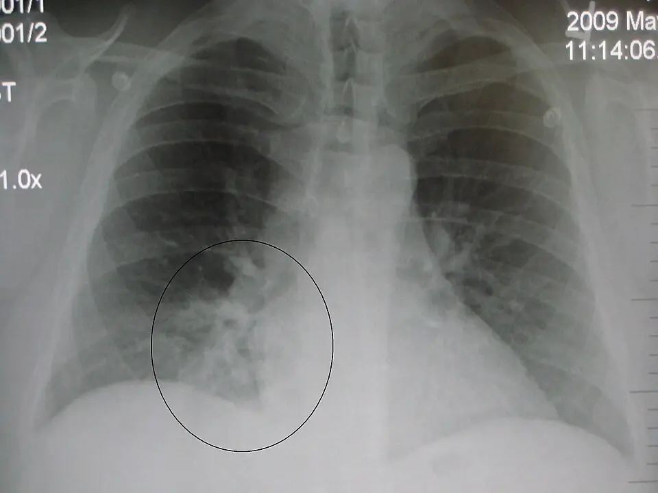

DX.1 — Pneumonie communautaire
1. Définition
La pneumonie communautaire est une infection aiguë du parenchyme pulmonaire, acquise hors de l'hôpital. Elle associe des signes respiratoires et une opacité nouvelle à la radiographie. L'infection touche les alvéoles. Le diagnostic repose sur la clinique et l'imagerie : aucun dosage ne le pose seul.
2. Épidémiologie (Suisse, puis Europe)
Aux urgences danoises, la pneumonie communautaire représente 34 % des infections confirmées (777 sur 954 adultes suspects, 2024)1. Aux urgences néerlandaises, la pneumonie bactérienne représente 27,2 % des patients fébriles (n = 213, 2011)2. Ces parts dépendent du lieu et de la population, donc elles ne classent pas les causes de fièvre. La gravité augmente avec l'âge, car l'âge de 65 ans ou plus entre dans le score CURB-653.
Le score totalise 1 point par critère, soit 6 points au maximum3.
Les critères sont la confusion, l'urée supérieure à 7 mmol/L et la fréquence respiratoire de 30/min ou plus3. Ils comprennent aussi une pression artérielle basse, c'est-à-dire systolique inférieure à 90 mmHg ou diastolique de 60 mmHg ou moins, et un âge de 65 ans ou plus3.
| Mesure (unité), critère | Valeur de la mesure de la ligne | Population (lieu, année) |
|---|---|---|
| Part de la pneumonie communautaire parmi les infections confirmées (%) | 34 | Adultes avec infection confirmée, urgences, Danemark, 20241 |
| Part de la pneumonie bactérienne parmi les patients fébriles (%) | 27,2 | Patients fébriles, urgences, Pays-Bas, 20112 |
| Sensibilité du diagnostic préliminaire du médecin (%) | 87 | Pneumonie communautaire, urgences danoises, 20241 |
| Mortalité à 30 jours (%) | 9 | 1068 adultes hospitalisés, Royaume-Uni, Nouvelle-Zélande, Pays-Bas, 20033 |
| Mortalité hospitalière (%) | 4,2 | Tous les patients fébriles hospitalisés ou non, Pays-Bas, 20112 |
| Association du sexe masculin à l'infection (toutes infections confondues) | Association présente | Adultes suspects d'infection, urgences danoises, 20241 |
| Enjeux de santé publique | Mortalité, hospitalisation, bon usage des antibiotiques : la résistance augmente avec chaque prescription inutile | Tous les patients atteints de pneumonie communautaire |
L'âge de 65 ans ou plus3, la BPCO, le diabète et les maladies cardiaques désignent les groupes à risque, car ils réduisent la réserve respiratoire (point 5).
Sans traitement adapté, la maladie évolue de la localisation alvéolaire vers l'hypoxémie, puis vers le syndrome de détresse respiratoire aiguë ou la bactériémie (point 3).
3. Physiopathologie
La cascade va du niveau moléculaire au niveau clinique.
À l'amorce, au niveau moléculaire, le germe atteint l'alvéole par micro-aspiration de la flore du pharynx ou par inhalation de gouttelettes.
Au développement, au niveau cellulaire, les macrophages alvéolaires libèrent des cytokines, les neutrophiles affluent et l'alvéole se remplit d'exsudat.
À l'installation, au niveau tissulaire, les alvéoles pleines d'exsudat ne s'aèrent plus : le sang les traverse sans s'oxygéner, d'où l'hypoxémie.
Au maintien, au niveau clinique, une inflammation intense endommage la barrière alvéolo-capillaire, si bien que le syndrome de détresse respiratoire aiguë ou la bactériémie s'installent.
| Lésion ou perturbation | Exploration qui la montre | Thérapeutique et mécanisme |
|---|---|---|
| Infection bactérienne alvéolaire | Opacité à la radiographie ; CRPProtéine C réactive : protéine synthétisée par le foie en phase aiguë de l'inflammation. élevée | Antibiotique : il tue le germe ou arrête sa croissance (Co-Amoxicilline, Rocephin® , Klacid®) |
| Exsudat alvéolaire, shunt | SpO2Saturation pulsée en oxygène, mesurée au doigt. Une valeur basse en air ambiant signale une hypoxémie. basse | Oxygène : il élève la pression partielle d'oxygène alvéolaire |
| Fièvre, douleur pleurale | Température, anamnèse | Antipyrétique et antalgique : Dafalgan® freine la synthèse de prostaglandines centrales |
| Hypovolémie, tachypnée | Pression artérielle, urée, fréquence respiratoire | Hydratation : elle compense les pertes insensibles |
| Réaction inflammatoire excessive en soins intensifs | Gravité clinique, ventilation | Hydrocortisone : elle freine la cascade inflammatoire ; la mortalité à 28 jours passe à 6,2 % contre 11,9 % sous placebo4 |
La physiopathologie explique le pronostic : plus l'hypoxémie et la défaillance d'organe sont précoces, plus la gravité est élevée. Elle explique aussi l'ordre du traitement, car le médecin donne l'antibiotique tôt, l'oxygène si la saturation baisse et les soins intensifs si une défaillance apparaît.
4. Démarche diagnostique
Le médecin fait d'abord le diagnostic de gravité, puis le diagnostic de pneumonie. Il suit les étapes dans l'ordre. La liste des diagnostics différentiels suit un ordre canonique, et cet ordre ne reflète aucune fréquence.
Étape 1. Le médecin cherche d'abord les drapeaux rouges, et chaque drapeau est cliquable : sa fenêtre dit pourquoi il est rouge.
| Drapeau rouge | Diagnostic à craindre | Signe ou examen qui tranche, piège | Conduite immédiate |
|---|---|---|---|
| 🚩 Fréquence respiratoire ≥ 30/minLe patient compense une hypoxémie ou une acidose3. Ce seuil entre dans le score CURB-65 et annonce une pneumonie sévère.3 | Pneumonie sévère, SDRA | Compter 1 minute entière3. Piège : la fièvre et l'anxiété accélèrent aussi la respiration. | Oxygène, score CURB-65, hospitalisation3 |
| 🚩 ConfusionLe cerveau manque d'oxygène ou subit l'effet de l'inflammation. La confusion est un critère CURB-65 et suggère une méningite si la nuque est raide3. | Pneumonie sévère, méningite (DX.12), sepsis (DX.11)3 | Examiner la nuque. Piège : la confusion du sujet âgé peut être le seul signe. | Appel d'urgence, hémocultures, antibiotique rapide |
| 🚩 Hypotension artériellePression systolique < 90 mmHg ou diastolique ≤ 60 mmHg : elle traduit un choc septique débutant. | Sepsis (DX.11)3 | Mesurer la pression, lactate. Piège : un patient hypertendu connu peut être en choc avec 100 mmHg3. | Remplissage, antibiotique dans l'heure, soins intensifs |
| 🚩 Hypoxémie (SpO2 basse)Elle prouve une atteinte alvéolaire étendue. L'oxygène devient un traitement, non un confort. | Pneumonie étendue | Oxymètre au doigt. Piège : mains froides, vernis, choc faussent la mesure. | Oxygène, gazométrie |
| 🚩 Épanchement pleural abondantUn liquide purulent (empyème) ne guérit pas sans drainage. Il se cherche à l'échographie. | Empyème | Matité à la percussion, échographie pleurale. | Ponction, drainage, avis spécialisé |
Étape 2. En l'absence de drapeau rouge, le médecin suit six gestes. Il recueille l'anamnèse et mesure les constantes, puis il examine le thorax3. Il demande une radiographie du thorax si le doute persiste, et il calcule le score CURB-653. Il décide ensuite du lieu de traitement, domicile ou hôpital, puis il prescrit l'antibiotique. Les détails figurent dans les points suivants du cours.
5. Anamnèse ciblée et drapeaux rouges
Pour la pneumonie communautaire, la fenêtre Questions de l'anamnèse détaille chaque question, sa raison et la décision qu'elle change.
Drapeaux rouges actionnables. Le médecin doit appeler le 144 devant une détresse respiratoire, une confusion ou une pression artérielle systolique inférieure à 90 mmHg3. Il organise une radiographie du thorax le jour même devant une fièvre avec toux et SpO2 basse. Il demande un avis spécialisé devant une immunodépression, une pneumonie récidivante au même site ou des hémoptysies.
6. Examen physique ciblé, région par région
Pour chaque région, le médecin décrit d'abord ce qui est normal, puis ce qui est pathologique. La valeur de chaque signe isolé est qualitative : elle sert à orienter le diagnostic.
Pour la pneumonie communautaire, l'examen ciblé suit l'ordre ci-dessous, et chaque fenêtre donne le normal, le signe à rechercher, sa technique et son aspect. Les temps de l'examen sont : Constantes ; Thorax, inspection ; Thorax, palpation et percussion ; Thorax, auscultation et Neurologique et peau.
7. Approche syndromique
7.1 Syndrome de condensation pulmonaire. La condensation correspond à des alvéoles remplies d'exsudat3.
| Type | Signe | Geste de recherche, mécanisme |
|---|---|---|
| Fonctionnel | Toux productiveExpectoration purulente : les neutrophiles et les bactéries remplissent les voies aériennes. Demander la couleur et la quantité. | Poser la question ; l'inflammation bronchique stimule le réflexe de toux. |
| Fonctionnel | DyspnéeSensation de manquer d'air. Mesurer la fréquence respiratoire et la capacité à parler en phrases. | L'exsudat réduit la surface d'échange. |
| Physique | Vibrations vocales augmentées, matité, souffle tubaire | Gestes du point 6 ; le poumon condensé transmet mieux les vibrations. |
7.2 Syndrome infectieux général. Il associe fièvre, frissons, asthénie et tachycardie3. La fièvre traduit la libération d'interleukine 1Cytokine qui élève le point de consigne thermique de l'hypothalamus.. Le médecin mesure la température et le pouls ; la tachycardie suit la fièvre et l'hypovolémie.
7.3 Syndrome pleural. Les signes fonctionnels comprennent une douleur à l'inspiration et une toux sèche3. Les signes physiques associent un frottement, puis une matité et une abolition du murmure si un épanchement s'installe. Le médecin ausculte la base et percute le dos ; le liquide sépare la plèvre du poumon et abolit les bruits.
8. Diagnostic positif et critères
Le score de gravité retenu est le CURB-65 (Lim, Thorax, 2003)3. Le diagnostic est posé par trois éléments : un symptôme respiratoire aigu (toux, dyspnée, expectoration, douleur pleurale), un signe infectieux (fièvre, signes focaux) et une opacité nouvelle à l'imagerie. L'opacité radiologique est le critère décisif, car la clinique seule manque de précision. Les recommandations de la SSI et le score CURB-65 servent de critères de gravité3. Le seuil de gravité CURB-65 est de 3 points ou plus3.
| Score | Mortalité à 30 jours (cohorte hospitalière) (%) | Conduite |
|---|---|---|
| 0 | 0,7 % | Traitement ambulatoire possible, si le contexte social et le jugement clinique le permettent |
| 1 à 2 | 3,2 % pour 1 ; pour 2, le résumé de l'article imprime 3 %3 | Hospitalisation à discuter ; jugement clinique |
| 3 | 17 % | Hospitalisation |
| 4 à 5 | 41,5 % pour 4 ; 57 % pour 53 | Hospitalisation, évaluer les soins intensifs |
Ce qui ne suffit pas. La fièvre seule, la toux seule, la CRP élevée seule ou un crépitant isolé ne posent pas le diagnostic. Le score CURB-65 mesure la gravité : il ne pose pas le diagnostic3.
9. Examens complémentaires
9.a Gold standard.
Il n'existe pas de gold standard unique. Le diagnostic reste clinique et radiologique : l'opacité nouvelle à la radiographie, avec symptômes respiratoires et fièvre.
9.b Première intention.
Pour la pneumonie communautaire, chaque examen du tableau « Examens de première intention » ouvre une fenêtre, qui précise les valeurs, l'interprétation et les pièges. Les examens concernés sont : Radiographie du thorax face (± profil) ; SpO2 et fréquence respiratoire ; CRP et Hémocultures, urée, créatinine.
La fenêtre Radiographie du thorax : pneumonie du lobe inférieur droit montre le cliché brut, puis sa copie annotée et sa lecture guidée.
9.c Alternatives. La tomodensitométrie du thorax sert si la radiographie est normale malgré un doute fort, ou si une complication est suspectée3. L'échographie pulmonaire et pleurale sert au lit du malade et à la recherche d'un épanchement. En cas de grossesse, la radiographie reste possible avec protection ; l'IRM n'a pas de place ici. Si le DFGe est inférieur à 30 mL/min ou si le patient est allergique aux produits iodés, le médecin évite la TDM avec contraste3. Il choisit une TDM sans contraste ou une échographie3.
9.d Deuxième intention.
Le médecin prescrit les antigènes urinaires du pneumocoque et de la légionelle, une culture et une PCR respiratoire en cas de gravité, de non-réponse ou d'épidémie.
La réaction en chaîne par polymérase (PCR) amplifie l'ADN ou l'ARN d'un germe, et elle détecte les virus respiratoires et les germes atypiques. Le critère de passage est l'absence d'amélioration après 48 à 72 heures de traitement3.
Pour la pneumonie communautaire, chaque examen du tableau « Examens de deuxième intention : résultat, signification, conduite » ouvre une fenêtre, qui précise les valeurs, l'interprétation et les pièges. Les examens concernés sont : Antigène urinaire du pneumocoque ou de la légionelle, Culture ou PCR respiratoire et CRP et PCT.
10. Arbre décisionnel
- Si le patient présente une détresse respiratoire, une confusion ou une pression systolique inférieure à 90 mmHg, le médecin appelle le 144 et donne de l'oxygène3. Il prélève des hémocultures, débute un antibiotique i.v. immédiat et envisage les soins intensifs.
- Si le patient présente une fièvre, une toux et un signe focal, le médecin demande une radiographie du thorax.
- Si la radiographie montre une opacité nouvelle, le diagnostic de pneumonie est posé et le médecin calcule le score CURB-653.
- Si le score est à 0 et le contexte sûr, le médecin prescrit un traitement ambulatoire par Co-Amoxicilline et réévalue le patient à 48 à 72 heures3.
- Si le score est de 1 à 2, l'hospitalisation se discute selon le jugement clinique et le contexte social3.
- Si le score est de 3 ou plus, le médecin hospitalise le patient, prescrit Rocephin® associé à Klacid® i.v. et envisage les soins intensifs3.
- Si la radiographie est normale et la clinique évocatrice, le médecin demande une TDM ou répète la radiographie, et il envisage une bronchite ou une autre cause (DX.9)3.
- Si aucune amélioration n'apparaît à 72 heures, le médecin demande une culture et des antigènes urinaires, puis il cherche une complication (empyème) ou un diagnostic différentiel (DX.11, DX.13)3.
11. Prise en charge selon les recommandations suisses
11.A But thérapeutique.
Le médecin vise l'apyrexie et l'amélioration respiratoire en 48 à 72 heures, puis la guérison clinique34. La mortalité à 30 jours de la cohorte de Lim est de 0,7 % pour un score à 0 et de 17 % pour un score à 33. Elle justifie le traitement ambulatoire du premier groupe et l'hospitalisation du second. En soins intensifs, l'hydrocortisone a réduit la mortalité à 28 jours à 6,2 %, contre 11,9 % sous placebo4.
11.B Moyens.
Urgence — pneumonie sévère ou sepsis. Le médecin suit la conduite chronologique ci-dessous.
Premiers gestes. Le médecin appelle le 144, donne de l'oxygène et pose une voie veineuse34. Il mesure la pression artérielle, la FR, la SpO2 et la température.
Gestes suivants. Il prélève des hémocultures et un lactate, sans retarder l'antibiotique34. Il débute Rocephin® i.v. à 1 à 2 g par jour6. Il associe Klacid® i.v. à 500 mg 2 fois par jour, pendant 5 jours au maximum12.
Dans les heures suivantes. Le médecin perfuse un remplissage vasculaire, surveille le patient en soins intensifs et discute l'hydrocortisone avec un spécialiste (soins intensifs, infectiologie) avant toute prescription.
L'essai CAPE COD, recommandation non suisse, donne 200 mg d'Hydrocortisone par jour par voie i.v. pendant 4 ou 8 jours selon l'évolution4, et l'AIPS Solu-CORTEF® autorise la voie i.v.13. Le médecin diminue ensuite la dose progressivement, jusqu'à 8 ou 14 jours au total4. L'AIPS n'inscrit toutefois pas la pneumonie sévère parmi les indications de Solu-CORTEF®13.
Hors urgence, le traitement suit l'ordre suivant.
1. Mesures générales.
Le médecin hydrate le patient, impose le repos et donne de l'oxygène si la SpO2 est basse. Il prescrit un antipyrétique, Dafalgan®, à 500 à 1000 mg par prise, sans dépasser 4 g par jour10. Ces mesures soulagent les symptômes.
2. Traitement pharmacologique. L'antibiotique couvre le pneumocoque, l'Haemophilus et le Moraxella5.
| Situation | Spécialité (AIPS), dose, voie | Points d'attention |
|---|---|---|
| Ambulatoire | Co-Amoxicilline : 2 × 1000 mg ou 3 × 625 mg par jour par voie orale5 | Allergie aux pénicillines → voir contre-indications. Durée selon les recommandations de la SSI. |
| Atypiques, légionellose non sévère | Klacid® : 250 à 500 mg toutes les 12 heures par voie orale7 | Allongement de l'intervalle QT ; interactions (AIPS). |
| Alternative orale | Doxycyclin-Mepha : 200 mg le premier jour, puis 100 mg par jour8 | Pendant la grossesse, elle ne s'administre qu'en cas de nécessité absolue, et elle ne s'administre pas pendant l'allaitement (AIPS). |
| Hospitalisé, sévère | Rocephin® : 1 à 2 g par jour i.v. ; Klacid® i.v. : 500 mg 2 fois par jour612 | Pas de ceftriaxone avec du calcium i.v. chez le nouveau-né. |
| Molécule (spécialité®, n° Swissmedic) | Dose | Voie | Durée | Contre-indication majeure | Extrait AIPS |
|---|---|---|---|---|---|
| Amoxicilline avec acide clavulanique (Co-Amoxicilline Spirig HC®, 67240) | 2 × 1000 mg ou 3 × 625 mg par jour5 | Orale | Elle suit l'évolution, avec une réévaluation à 48 à 72 heures34 | Hypersensibilité aux pénicillines ou aux céphalosporines5 | « pneumonies ambulatoire, … 2 x 1000 mg (875/125) ou 3 x 625 mg (500/125) par jour »5 |
| Ceftriaxone (Rocephin®, 44625) | 1 à 2 g par jour6 | Intraveineuse | Elle est fonction de l'indication et de l'évolution6 | Hypersensibilité à une céphalosporine ; nouveau-né avec calcium i.v.6 | « En général, 1 - 2 g de Rocephin une fois par jour (toutes les 24 heures) »6 |
| Clarithromycine (Klacid® comprimés, 50469) | 250 à 500 mg toutes les 12 heures7 | Orale | Elle ne dépasse pas 14 jours en cas d'insuffisance rénale sévère7 | Astémizole, cisapride, dompéridone, pimozide, quétiapine, terfénadine, ergot de seigle7 | « 1 comprimé pelliculé à 250 mg toutes les 12 heures »7 |
| Clarithromycine (Klacid® i.v., 51759) | 500 mg 2 fois par jour12 | Intraveineuse | Elle atteint 5 jours au maximum12 | Hypersensibilité aux macrolides12 | « 500 mg 2 fois par jour »12 |
| Doxycycline (Doxycyclin-Mepha, 65952) | 200 mg le premier jour, puis 100 mg par jour8 | Orale | Elle suit l'évolution clinique | Hypersensibilité aux tétracyclines ; insuffisance hépatique sévère8 | « 200 mg le premier jour, suivie de 100 mg par jour en dose unique »8 |
| Ciprofloxacine (Ciprofloxacine Spirig HC®, 55922) | 2 × 500 mg à 2 × 750 mg par jour9 | Orale | Elle dure 7 à 14 jours9 ; l'AIPS ne la retient pas en premier choix contre le pneumocoque9 | Grossesse, allaitement, enfant9 | « Infections des voies respiratoires inférieures 2× 500 mg à 2× 750 mg 7 à 14 jours »9 |
| Paracétamol (Dafalgan®, 47503) | 500 à 1000 mg par prise, 4 g par jour au maximum10 | Orale | L'intervalle entre deux prises est de 4 à 8 heures10 | Insuffisance hépatique grave ; maladie de Gilbert10 | « Respecter un intervalle de 4 à 8 h (adultes) »10 |
| Hydrocortisone (Solu-CORTEF®, 23533), hors AIPS | 200 mg par jour selon CAPE COD413 | Intraveineuse | 4 ou 8 jours, puis diminution jusqu'à 8 ou 14 jours au total4 | Hypersensibilité ; vaccin vivant sous doses immunosuppressives13 | « Dans les cas d'urgence, le traitement initial se fera de préférence par injection intraveineuse »13 |
3. Non pharmacologique.
Le médecin propose la kinésithérapie respiratoire, la mobilisation précoce, l'arrêt du tabac et une nutrition adaptée.
4. Situations spéciales. Pendant la grossesse, l'AIPS réserve la Co-Amoxicilline aux cas de nécessité absolue, car l'entérocolite nécrosante néonatale atteint 1,5 % contre 0,5 % après rupture prématurée des membranes5. Pendant l'allaitement, l'AIPS déconseille d'allaiter sous ce médicament5. La Ciprofloxacine est contre-indiquée pendant la grossesse et l'allaitement9, tandis que Doxycyclin-Mepha ne s'administre pendant la grossesse qu'en cas de nécessité absolue et ne s'administre pas à la femme qui allaite8.
Chez le patient en insuffisance rénale, la Co-Amoxicilline se donne à 625 mg toutes les 12 heures si la clairance est de 10 à 30 mL/min5. Sous 10 mL/min, elle se donne toutes les 24 heures5. Klacid® voit sa dose réduite de moitié sous 30 mL/min712. Chez le sujet âgé, l'AIPS ne demande aucun ajustement de la Co-Amoxicilline sans insuffisance rénale5, ni de Rocephin® à partir de 65 ans sans trouble sévère rénal ou hépatique6. Chez l'enfant de 15 jours à 12 ans, Rocephin® se donne à 20 à 80 mg/kg par jour6. Un ictère survenu antérieurement sous Co-Amoxicilline contre-indique sa reprise5, et l'insuffisance hépatique grave contre-indique Dafalgan®10. Les formes pédiatriques d'amoxicilline-acide clavulanique existent sous d'autres noms de spécialité.
11.C Surveillance.
Le médecin contrôle chaque jour à l'hôpital la température, la FR, la SpO2 et la pression artérielle. Il réévalue le patient à 48 à 72 heures34, car l'absence d'amélioration impose de chercher une complication. Les seuils d'alerte sont une FR de 30/min ou plus, une pression systolique inférieure à 90 mmHg et une confusion3.
Le médecin arrête la Co-Amoxicilline devant une réaction d'hypersensibilité grave5, et il arrête Klacid® i.v. au plus tard après 5 jours12. Il annonce au patient les effets indésirables : diarrhée et éruption sous Co-Amoxicilline5, tendinite sous Ciprofloxacine9 et troubles du rythme sous Klacid®7.
11.D Pronostic, sortie, recherche. Le pronostic dépend du score CURB-653. La mortalité à 30 jours varie de 0,7 % pour un score à 0 à 57 % pour un score à 53. Le patient sort lorsque quatre critères sont réunis4.
- Le patient est afébrile.
- La SpO2 est stable en air ambiant.
- Le patient mange et boit.
- Le traitement oral est possible.
Le médecin fixe l'arrêt de travail selon la clinique. La LAMal couvre le traitement, la LAA s'applique si l'exposition est professionnelle et la LAI reste exceptionnelle. Une piste de recherche est l'hydrocortisone en soins intensifs, testée par Dequin et ses collègues en 20234.
12. Prévention
Prévention primaire. La vaccination antipneumococcique conjuguée est recommandée à tous les adultes dès 65 ans (OFSP et CFV, état au 1er juillet 2026), avec le PCV20 ou le PCV2111. Les groupes à risque entre 18 et 64 ans reçoivent le PCV21 selon la liste des facteurs de risque de l'OFSP11. L'arrêt du tabac et la vaccination annuelle contre la grippe protègent aussi.
Prévention secondaire. Le médecin repère tôt les patients à risque (âge, BPCO) et il réévalue le patient à 48 à 72 heures34.
Prévention tertiaire. Après une pneumonie grave, le médecin propose une réadaptation respiratoire et une radiographie de contrôle selon l'âge et le tabagisme. Le lien avec le point 2 est direct : l'âge de 65 ans ou plus élève le risque de gravité3.
13. Points clés
Le diagnostic de pneumonie repose sur une toux fébrile et une opacité nouvelle à la radiographie.
Le score CURB-65 permet au médecin de choisir entre le domicile et l'hôpital3.
Une fréquence respiratoire de 30/min ou plus, une confusion ou une pression systolique inférieure à 90 mmHg imposent l'hospitalisation3.
La Co-Amoxicilline Spirig HC® en 2 × 1000 mg par jour traite la pneumonie ambulatoire selon l'AIPS5.
Le médecin réévalue à 48 à 72 heures et cherche une complication si le patient ne s'améliore pas34.
Le médecin propose le vaccin antipneumococcique à chaque adulte de 65 ans ou plus11.
14. Pièges et questions fréquentes à l'examen fédéral suisse
Première question. Quel score choisit le lieu de traitement d'une pneumonie ?
Réponse : Le score CURB-65 regroupe la confusion, l'urée, la fréquence respiratoire, la pression artérielle et l'âge de 65 ans ou plus3. La raison est que ce score lie chaque total à une mortalité à 30 jours3, donc il guide le lieu de traitement.
Deuxième question. Une radiographie normale exclut-elle une pneumonie ?
Réponse : Non, car l'exsudat peut ne pas encore être visible au début. Le médecin peut donc répéter le cliché ou demander une TDM, et la clinique prime.
Troisième question. Quelle est la dose AIPS de Co-Amoxicilline Spirig HC® pour une pneumonie ambulatoire ?
Réponse : La dose est de 2 × 1000 mg ou de 3 × 625 mg par jour5. Elle vaut chez l'adulte de plus de 40 kg5, car l'AIPS range la pneumonie ambulatoire parmi les cas particuliers.
Quatrième question. Peut-on donner 2 × 1000 mg de Co-Amoxicilline Spirig HC® avec une clairance de 25 mL/min ?
Réponse : Non, car l'AIPS interdit 2 × 1000 mg sous 30 mL/min5. À 25 mL/min, la dose est de 625 mg toutes les 12 heures5, car l'élimination rénale diminue.
Cinquième question. Quelle fluoroquinolone de ce cours l'AIPS contre-indique-t-il pendant la grossesse ?
Réponse : La ciprofloxacine : l'AIPS la contre-indique chez la femme enceinte et allaitante9. La raison est le risque de lésion du cartilage en croissance.
Sixième question. Quel traitement associe-t-on à la ceftriaxone dans une pneumonie sévère ?
Réponse : Un macrolide i.v. est associé : la clarithromycine. La dose est de 500 mg 2 fois par jour, pendant 5 jours au maximum12. La raison est que le macrolide couvre les germes atypiques et la légionelle.
Septième question. Quel effet a l'hydrocortisone en soins intensifs dans la pneumonie sévère ?
Réponse : La mortalité à 28 jours baisse : 6,2 % contre 11,9 % sous placebo4. La raison est que l'hydrocortisone freine la réaction inflammatoire excessive.
Huitième question. Quelle est la dose maximale de paracétamol par jour chez l'adulte ?
Réponse : La dose maximale est de 4 g par jour10. La raison est que le surdosage provoque une lésion hépatique, maximale après 3 à 4 jours10.
Neuvième question. Quelle durée maximale l'AIPS fixe-t-il pour Klacid® i.v. ?
Réponse : La durée est de 5 jours au maximum12. La raison est que le médecin passe à la voie orale dès que possible12.
Dixième question. Pourquoi évite-t-on la ceftriaxone avec du calcium i.v. chez le nouveau-né ?
Réponse : L'AIPS contre-indique cette association chez le nouveau-né de 28 jours ou moins6. La raison est la formation de précipités de calcium-ceftriaxone6.
Onzième question. Quelle dose orale de clarithromycine l'AIPS prévoit-il chez l'adulte ?
Réponse : La dose est de 250 mg toutes les 12 heures, et elle peut atteindre 500 mg toutes les 12 heures7. La raison est que le médecin adapte la dose à la gravité de l'infection7.
Douzième question. Quelle fréquence respiratoire annonce une pneumonie sévère ?
Réponse : Une fréquence respiratoire de 30/min ou plus fait partie du score CURB-653. La raison est que le patient compense une hypoxémie ou une acidose3.
Sources bibliographiques
Questions de l'anamnèse
| Question clé | Raison physiopathologique | Ce qu'elle change |
|---|---|---|
| Depuis quand la toux et la fièvre ? | Une évolution aiguë évoque une infection aiguëInfection d'installation rapide, par opposition à la fièvre prolongée de plus de 3 semaines.3. | Une durée plus longue impose d'élargir le diagnostic différentiel (DX.4, DX.8)3. |
| Y a-t-il une douleur thoracique à l'inspiration ? | La plèvreMembrane qui enveloppe le poumon ; inflammée, elle devient douloureuse. inflammatoire se frotte à chaque inspiration. | Elle oriente vers une pneumonie lobaire ; elle impose d'exclure une embolie pulmonaire. |
| Y a-t-il eu un voyage ou un contact animal ? | Certains germes viennent de l'eau chaude (légionelleBactérie des réseaux d'eau chaude ; elle donne une pneumonie sévère, avec diarrhée et confusion.) ou des animaux. | Elle justifie un test urinaire et un macrolide. |
| Quel âge et quelles maladies chroniques (BPCO, diabète, cœur) ? | Ces maladies réduisent la réserve respiratoireCapacité du poumon à compenser une perte de surface d'échange.. | Elle fait pencher vers l'hospitalisation. |
| Y a-t-il eu une prise récente d'antibiotique ? | Elle sélectionne des germes résistantsBactéries dont la paroi ou les enzymes neutralisent l'antibiotique.. | Elle change le choix de la molécule. |
| La patiente est-elle enceinte ? Le patient est-il allergique ou immunodéprimé ? | La grossessePériode où plusieurs antibiotiques exposent le fœtus ; l'AIPS les limite. et l'allergie limitent les molécules (AIPS). | Elle écarte la doxycycline et la ciprofloxacine en cas de grossesse. |
Constantes
| Normal attendu | Patient afébrile, respiration calme et sans tirage, SpO2 normale en air ambiant, pression systolique de 90 mmHg ou plus3. |
|---|---|
| Signes à rechercher (cliquer) | Fréquence respiratoireTechnique : compter les mouvements du thorax pendant 1 minute, patient au repos. Valeur : 30/min ou plus signe la gravité (CURB-65). Piège : le patient qui sait qu'on le regarde respire plus lentement.3 · SpO2Technique : oxymètre au doigt tiède, 30 secondes. Valeur : une valeur basse montre l'hypoxémie. Piège : une valeur normale n'exclut pas une pneumonie. · Pression artérielleTechnique : brassard adapté, patient assis. Valeur : pression systolique sous 90 mmHg ou diastolique à 60 mmHg ou moins : critère CURB-65. Piège : hypertendu connu en choc avec une valeur « normale ». |
Thorax, inspection
| Normal attendu | Mouvements symétriques, sans tirage. |
|---|---|
| Signes à rechercher (cliquer) | Tirage et battement des ailes du nezTechnique : observer le cou et les espaces intercostaux à l'inspiration. Valeur : il traduit un effort respiratoire élevé. Piège : absent chez le sujet épuisé : l'épuisement est plus grave que le tirage. |
Thorax, palpation et percussion
| Normal attendu | Vibrations vocales égales ; sonorité pulmonaire normale. |
|---|---|
| Signes à rechercher (cliquer) | Vibrations vocales augmentéesTechnique : poser la main à plat sur le thorax, faire dire « trente-trois », comparer à droite et à gauche. Valeur : elles augmentent sur un poumon condensé. Piège : elles diminuent s'il existe un épanchement. · MatitéTechnique : percuter un doigt posé sur le thorax avec l'autre doigt, de haut en bas. Valeur : le son mat suggère une condensation ou un épanchement. Piège : la matité de base peut venir de l'abdomen. |
Thorax, auscultation
| Normal attendu | Murmure vésiculaire doux, sans bruit ajouté. |
|---|---|
| Signes à rechercher (cliquer) | CrépitantsTechnique : stéthoscope sur la peau nue, patient respirant profondément la bouche ouverte, comparaison des deux côtés. Valeur : ils orientent vers une atteinte alvéolaire. Piège : ils manquent dans une pneumonie débutante. · Souffle tubaireTechnique : écouter la voix et la respiration sur la zone mate. Valeur : il signe une condensation alvéolaire. Piège : il disparaît si la bronche est obstruée. |
Neurologique et peau
| Normal attendu | Patient orienté, nuque souple, peau rosée. |
|---|---|
| Signes à rechercher (cliquer) | Raideur de nuqueTechnique : patient couché, fléchir passivement la tête vers le thorax. Valeur : la raideur oriente vers une méningite (DX.12). Piège : elle manque chez le sujet âgé. · MarbruresTechnique : inspecter les genoux et les membres. Valeur : elles traduisent une hypoperfusion et un choc. Piège : le froid de la pièce les provoque aussi3. |
Radiographie du thorax : pneumonie du lobe inférieur droit
Radiographie du thorax : pneumonie du lobe inférieur droit. Le cliché est une radiographie du thorax de face en incidence antéropostérieure, et le cercle noir appartient au fichier d'origine.

Le lecteur lit d'abord seul ce cliché et cherche lui-même le signe de la pneumonie.
La copie annotée porte les repères décrits ci-dessous, et chaque repère est numéroté.
- Une opacité alvéolaire floue occupe la base droite, car l'exsudat remplit les alvéoles et la zone devient blanche.
- La coupole diaphragmatique droite s'estompe au contact de l'opacité, car le poumon condensé et le diaphragme ont la même densité.
- Le poumon gauche est mieux aéré et sert de comparaison pour reconnaître l'opacité.
- Une radiographie normale au début de la maladie peut coexister avec une pneumonie.
- Une opacité nouvelle ne suffit pas : la clinique et le score CURB-653 décident du lieu de traitement.
Ce que l'image décide. Devant une opacité nouvelle avec toux et fièvre, le médecin pose le diagnostic de pneumonie, calcule le score CURB-653 et choisit le domicile ou l'hôpital.

Radiographie du thorax face (± profil)
| Indication et prescription | Suspicion de pneumonie avec doute clinique ; debout, en inspiration profonde. |
|---|---|
| Résultat → signification → conduite | Opacité nouvelle → pneumonie probable → antibiotique. Radiographie normale avec clinique évocatrice → clinique prime, discuter TDM ou répéter. |
SpO2 et fréquence respiratoire
| Indication et prescription | Chaque patient fébrile avec toux. |
|---|---|
| Résultat → signification → conduite | SpO2 basse → hypoxémie → oxygène et gazométrie. |
CRP
| Examen | CRPMarqueur biologique d'inflammation. Une valeur élevée ne distingue pas un germe viral d'un germe bactérien. |
|---|---|
| Indication et prescription | Prise de sang, au bilan hospitalier. |
| Résultat → signification → conduite | Valeur élevée → inflammation. Valeur normale précoce → ne pas exclure. |
Antigène urinaire du pneumocoque ou de la légionelle
| Résultat | Signification et conduite |
|---|---|
| Positif | Le germe est identifié : le médecin oriente l'antibiotique et envisage la déclaration éventuelle. |
| Négatif | Le test n'exclut pas le germe : le médecin garde la clinique comme guide. |
Culture ou PCR respiratoire
| Résultat | Signification et conduite |
|---|---|
| Positive | Le germe, bactérien ou viral, est identifié : le médecin adapte l'antibiotique. |
| Négative | Le test n'exclut pas le germe : le médecin cherche une complication si le patient ne s'améliore pas. |
CRP et PCT
| Résultat | Baisse au cours du traitement |
|---|---|
| Signification et conduite | Ces marqueurs aident le médecin à décider l'arrêt de l'antibiotique. |